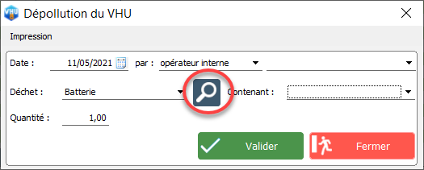

Dépollution de véhicules
Pour effectuer sur VHU2 la dépollution d'un véhicule, deux choix s'offrent à vous :
- soit vous passez par la fiche du véhicule qui vous intéresse,
- soit vous passez par le suivi de dépollution.
Via la fiche du véhicule
Il vous est possible d'effectuer la dépollution d'un véhicule en enregistrant les déchets directement depuis la fiche d'un véhicule, consutable lors de l'entrée d'un véhicule au stock ou bien à tout moment en consultant votre parc. Pour cela, il suffit de cliquer sur Dépollution en bas à droite.
Une nouvelle fenêtre apparaît. Cliquez ensuite sur Nouveau pour rentrer un nouveau déchet.
Via cette fenêtre, vous pouvez sélectionner le déchet, sa quantité, à quelle date et par qui cela a été exécuté.
Egalement, on retrouve ici la liste des contenants que vous avez pu créer dans la section précédente. Vous n'avez plus qu'à sélectionner le contenant désiré puis à valider.

En cliquant sur la loupe, vous retrouverez plus de détails concernant les paramétrages des déchets. Choisissez le type de déchet dans la liste à gauche puis paramétrez à votre guise les différentes informations sur la droite.
Via le suivi de dépollution
Depuis le menu principal, cliquez sur le Suivi de dépollution.
Vous avez ici accès à plusieurs outils.
Saisie des dépollutions (en cascade) :
En cliquant ici, vous accéderez à un outil de saisie rapide de l'opération de dépollution d'un véhicule.
Entrez d'abord l'immatriculation du véhicule ou bien son numéro de livre de police puis cliquez sur Rechercher.
Double-cliquez ensuite sur la 1ère ligne sous les intitulés de colonnes pour remplir les informations concernant le déchet dépollué.

Suivi des dépollutions par contenants ou véhicules :
En cliquant ici, vous pourrez consulter les informations concernant la dépollution (véhicules, déchets, contenants, quantités) en les triant par rapport à une période, un véhicule ou un type de déchet.